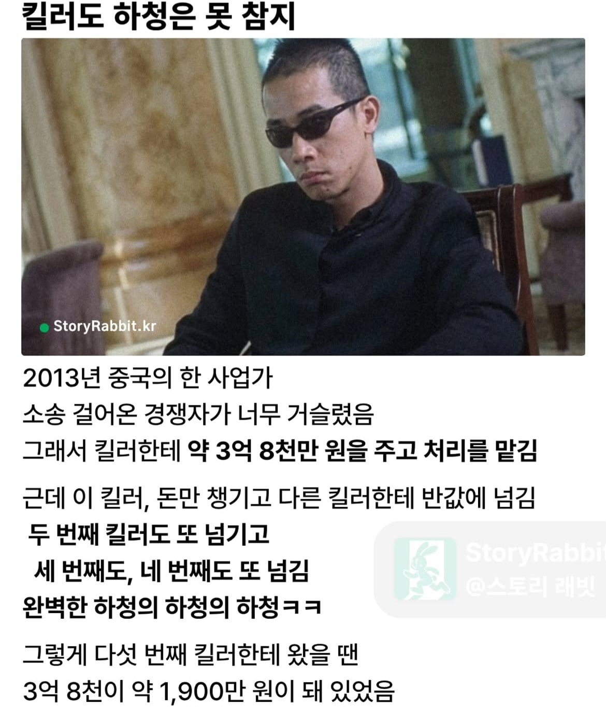
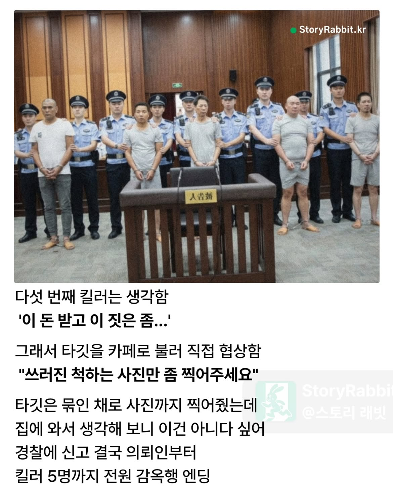

안찍어주면 이제 킬러가 알아서 찍음
사진에 안 찍히면 다른 거에 찍힐 수가 있어서
중간은 킬러라고 할 수 없잖아 ㅋㅋㅋㅋㅋ
오히려 마지막이 킬러라고 할 수 없다고 볼 수 있지 않을까? 이 사람은 확실히 이 돈 받고 죽이고 싶지는 않다고 했으니까 그 위는 다 살인교사 같은 거고.
업무내용을 알고도 수주했으니까 일단 다 똑같지 뭐
뭐 살인교사쯤 되려나
살인보다 더 쌘 살인교사
대기업: 받아랏 하청에하청에하청 납품단가 후려치기!! 죽어라 하청들아 우하하하하하
대기업: 빨리 언론사에 하청들 상생협력차 추석명절 납품대금 조기지급했다고 보도자료 뿌려라
그래야 대기업 이미지 좋아지지 우하하하
하청직원: 와 쟤 대기업 다닌다며? 부럽다 와~~
대기업: 병신같은 하청놈들 낄낄낄 하청들 갈취해서 우리가 떵떵거리며 사는걸 모르다니 ㅋㅋㅋㅋ 다음달 또 파업이다!!! 기본급 인상 성과급 쟁취!!! 와!!!!!!!!!!
와 이건 진짜 어리거나 나이가 엄청 많거나 둘중 하나일거같은데
육신의 나이는 많고 정신의 나이는 어린 상태
와 이거 완전 그 기업...
무슨 군인이 총난사갈기면서 성폭행한다는 트위터글보는거같네
오히려 대기업이 리스크관리 때문에 협력사에 하청의 하청 하지말라고 제한한다는거임..
100원 공사에 100원 내고 50원짜리 서비스 받고 싶어하는 고객은 없어
본문의 케이스도 처음에 돈 낸놈은 4억 지불하고 WWE로 서비스(?) 받은거임..
진짜 영포티네
지능의 문제
어휴 븅신새끼
이새낀 지가 똑똑하다고 생각하고 있겠지?
와시발 이건 진짜 못버티겠네..
경로당인가 시발
하청의 하청의 하청 돌릴 정도로 단가 쳐주는게 어떻기 후려치기임 ㅋㅋㅋㅋㅋ

첫짤은 푸시인가
왜 욕해?
근데 킬러에 하청하청이면
킬러 커뮤니티가 있나보네
편의점 물건이 비싼 이유/점주가 돈을 못 버는 이유와 같은 원리임
보통 죽이고 와야 돈을 주는 게 아닌가 ㅋㅋㅋ 일처리가 학실하다고 정평이 나있던 킬러였나
원청킬러 ㄷㄷ
옴니버스 웹소에 나올법한 일회성 에피잖어
심은경이 주연을 맡은 단편들로 이뤄진 옴니버스 영화 더킬러스 중 한 에피소드가 저런 내용임 ㅋㅋㅋㅋ
그 에피소드의 오리지널 스토리가 저 사건이겠네 ㅋㅋㅋ
5차밴더 그런겨?
죄다 킬러가 아니라 중개 역할하고 돈 떼먹을 생각으로 수주한 거지 그게 4명이고, 마지막 애 조차도 연기 시켜 돈 떼먹을 생각이었던 거고
1차밴더사가 어딘지 느낌은 오네
그 유해진 나오는 영화 럭키같네
죽인척하는 킬러
묶인채 사진까지 찍어줬다는 부분이 제일 코미디임